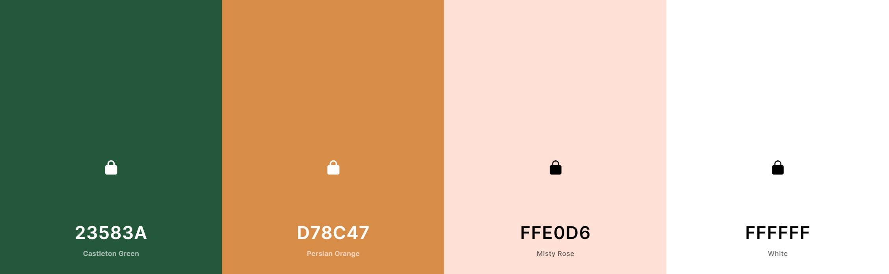

Colro Scheme
Castleton Green: #23583A
Castleton Green is used as the main color throught the site.
Persian Orange: #D78C47
Persion Orange will be used as a secondary color for smaller elements.
Misty Rose: #FFE0D6
Misty Rose is used as a third accent color and used in navigation and links
White: #FFFFFF
White is used primaraly for the background throught the site and for text against darker backgrounds.